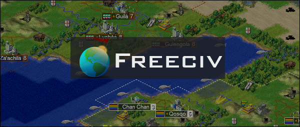

自由文明是灵感来自人文历史的自由且开放帝国建设战略游戏。游戏在史前发源，您的任务则是要从石器时代带领着您的部落发展到太空时代。可以用网页浏览器在线上免费地游玩自由文明。请选择您想游戏的方式：
来自网誌的最新消息：
HTML5 浏览器游戏
可以用桌上型电脑、手机或平板电脑来线上游玩自由文明网页版。已为 iPhone 及各种主流的 HTML5 浏览器（包括 Chrome、Firefox、Safari 及 IE）最佳化了自由文明网页版。

自由战略游戏拥有下列优点
- 可以在 HTML5 相容的浏览器、手机或平板电脑裡游玩
- 2D 俯视视角图型
- 人工智慧电脑玩家。
- 所有科技、单位和建筑都有来自维基百科的历史课程。
- 50 多种可用单位和 541 种民族可用。
- 全战场迷雾
- 自由文明是以 GNU 通用公开授权条款发行的开放源码软体
“自由文明是世界最佳 50 名内第 11 名的免费单机游戏！”
“可以在 HTML5 浏览器游玩自由文明，让全世界的生产力骤降” - “感谢 HTML5 的巫术让经典的回合制战略游戏可以在我们的浏览器游玩。当然也有桌面安装版可以玩哦！”
总回合数：
（自2015年9月20日开始的自由文明网页版总游玩回合数）
合作伙伴：Apolyton.net